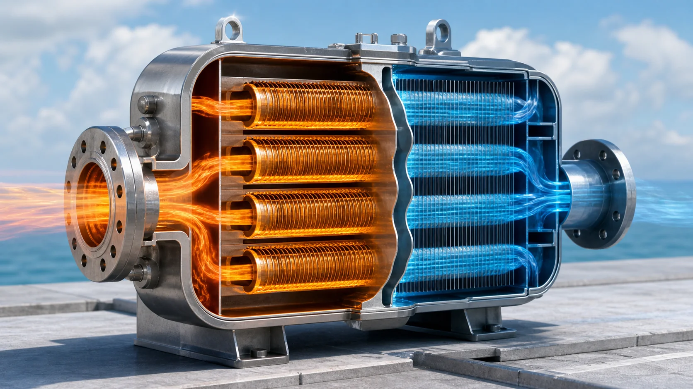
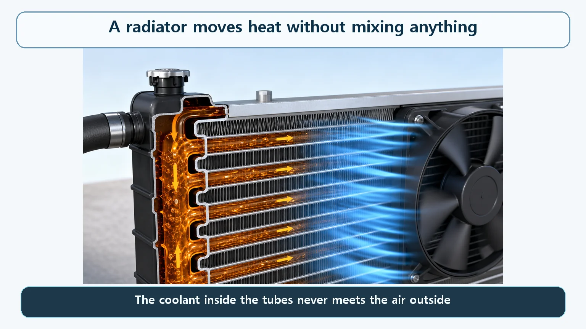
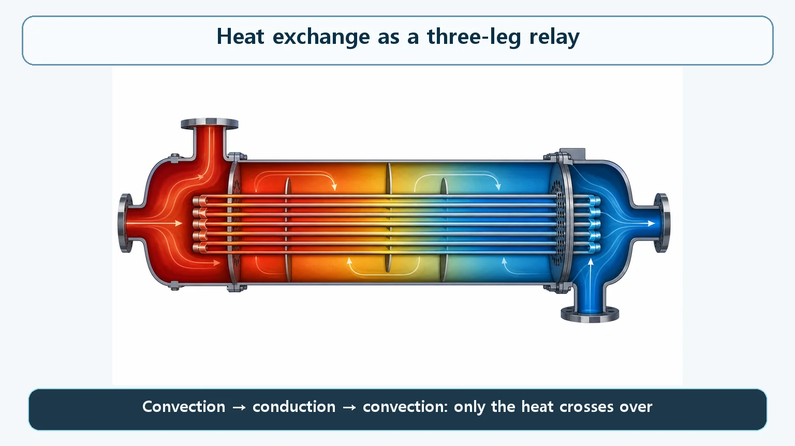

Heat Transfer & Thermal Hydraulics · 146
Passing Heat Without Shaking Hands — How a Heat Exchanger Works
A heat exchanger keeps two fluids apart and lets only heat cross the wall, in a three-leg relay of convection, conduction and convection.

A heat exchanger lets two fluids at different temperatures trade heat through a thin wall without ever mixing. Heat crosses in three hand-offs (convection, conduction, convection), and the basic relation Q = U × A × ΔT shows that a higher overall heat transfer coefficient, more area or a bigger temperature difference moves more heat.
The radiator under your hood
Pop the hood of a car and you'll find the radiator. It keeps the engine from overheating, and something quietly clever happens inside it. Hot coolant that has just looped through the engine flows into the radiator's many thin tubes. When the car is moving, or the cooling fan kicks in, cool outside air sweeps across the outer surface of those tubes. The coolant stays inside and the air stays outside, so not a single drop of the two ever mixes. Yet heat keeps crossing that one tube wall, from the coolant to the air. The coolant leaves cooler, and the air leaves warmer.

A device that hands over heat without ever meeting
What the radiator does has a name: it is a heat exchanger. Any device built so that two fluids at different temperatures never mix directly, yet trade heat through a thin wall between them (usually a metal tube or metal plate), is called a heat exchanger. The radiator is simply the example we meet most often; the principle is used far more widely.
Why keep the fluids apart? If they differ in purity, pressure or chemical makeup, or if one of them carries something that must never get into the other, you can't just let them touch and blend. A heat exchanger lets each fluid keep its own "identity" while passing along only energy, in the form of heat.
A nuclear power plant contains many heat exchangers: equipment that turns the reactor's heat into usable steam, a system that keeps pulling heat out of the core even after shutdown, and equipment that cools the water of various auxiliary systems. Rather than examining each machine, this article focuses on the single principle they all rely on.
Three hand-offs across one wall
Break down how heat crosses inside a heat exchanger and you find a relay with three legs. First, the hot fluid touches the inner surface of the wall, and heat moves into that surface: convection. Next, the heat travels through the thickness of the wall to the other surface: conduction. Finally, the cold fluid touching the far surface carries the heat away: convection again. Thanks to this relay, the two fluids exchange heat across the wall without ever actually meeting.
A single number sums up "how well does this heat exchanger move heat between the fluids?" without working through each leg. It is the overall heat transfer coefficient, usually written U. The wall's material and thickness, and how vigorously each fluid is flowing, are all folded into it. With U in hand, the heat the exchanger moves can be estimated with one simple equation:
Q = U × A × ΔT
| Symbol | Meaning |
|---|---|
| Q | Heat transferred per unit time, the rate at which the exchanger moves heat (watts) |
| U | Overall heat transfer coefficient: wall material and thickness plus flow conditions on both sides, combined |
| A | Heat transfer area: where the two fluids face each other through the wall |
| ΔT | Temperature difference between the two fluids |
Pick any values for U, A and ΔT and multiply them, and the result is the heat, in watts, the exchanger is moving at that moment. Grow any one of the three and you move more heat in the same time. Pack the tubes more densely to add area, push the fluids along harder to raise U, or secure enough temperature difference: those three moves are the backbone of heat exchanger design.

Neighbors that are easy to confuse
Not a coolant. The coolant is the fluid that carries heat; the heat exchanger is the device that lets that fluid trade heat with another fluid. Think of a container and its contents.
Not a direct-contact device. The heat exchangers here are the indirect (surface) type, where a wall separates the fluids and only heat passes. A cooling tower that sprays water straight into the air and cools it by evaporation is a direct-contact device, where the fluids touch and mix. The principles differ. In a nuclear power plant, systems that may contain radioactive material are, for the most part, separated from other systems by indirect heat exchangers.
Not a pump. A pump pressurizes a fluid to make it flow; a heat exchanger moves heat between two fluids that are already flowing. It produces no force of its own to push fluid along.
One component, two jobs: running and safety
Simple as it looks, Q = U × A × ΔT shapes both design and operation; designing a heat exchanger is ultimately a balancing act among its three factors. In a nuclear plant, heat exchanger performance matters on both fronts. During normal operation it affects how efficiently the reactor's heat can be turned into steam. After shutdown it affects how quickly the heat left in the core can be removed. That is why heat exchangers are a key family of components spanning both operation and safety. If scale or debris builds up on the surfaces, U drops and the same area moves less heat, so plants monitor and manage heat exchanger performance on a regular schedule.
A few common misconceptions
"After a heat exchanger, the two fluids end up at the same temperature." Not so. Because heat is traded over a finite area in a finite time, some temperature difference usually remains. Reaching exactly the same temperature would, in theory, take an infinitely large area or an infinitely long contact time.
"A little bit of fluid must mix inside." In a heat exchanger that is working normally, the two fluids do not physically mix at all. If they do, the wall has been damaged and the unit has failed.
"Having a heat exchanger means cooling takes care of itself." A heat exchanger only moves heat. The fluid on the other side that finally receives the heat, cooling water or air, has to keep flowing for the heat to actually go anywhere.
The one-line takeaways
- A heat exchanger lets two fluids at different temperatures trade heat through a thin wall without mixing, like a car radiator's coolant and air.
- Heat crosses in a three-leg relay (convection, conduction, convection), summed up by the overall heat transfer coefficient U.
- Q = U × A × ΔT: raise U, the area or the temperature difference and you move more heat.
- It is not a coolant, a direct-contact device or a pump; in nuclear plants it serves both operation and safety cooling.
- The fluids never reach exactly the same temperature, and in normal operation they never mix.